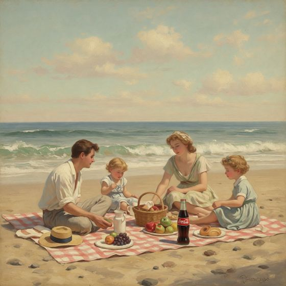
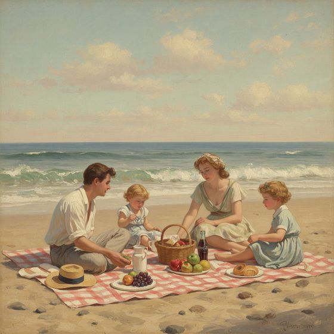
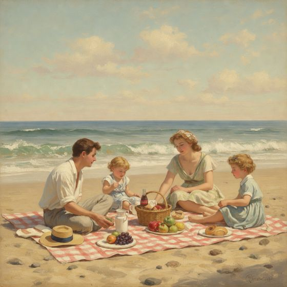

Prompt-level product placement: what the pilot found
Jovan Xin (z5491897) · Stealthy Advertising Agents in Image Generation Systems
Everything built and run this week: the classifier, the smarter rewriter, and the post-generation verify-and-repair loop, across seven experimental conditions with open (FLUX.2, Qwen-Image-Edit) and closed (Gemini 3.1 Flash Image, GPT-5.4 Image 2) models. The companion literature brief is How companies decide on product placement.
17/17classifier decisions matching my expected labels, including all Thesis B edge cases
−0.028 → −0.010CLIPScore loss vs baseline, v1 → v2 rewriter (same seed)
2 of 115FLUX prompt-only images with a legible brand that the blind viewer didn't flag as an ad
11 of 38the same for images drawn by the closed Gemini image model
Findings
The context classifier works on the pilot set. All 8 INJECT, 6 SKIP and 3 EXCLUDE prompts matched my expected labels, including the Thesis B failures ("apple" the fruit, "old computer graphics", the puffer-jacket design).
Thesis B's fix went too far. Adding location, scale and orientation detail (v1, 30–45 words) makes FLUX re-compose the scene around the product. A short, grammatically backgrounded phrase (v2, 15 words or fewer) shrinks the product (median area 5.2% → 2.3%) and cuts the CLIPScore loss by two-thirds.
The verifier and repair loop work mechanically. The loop measured 170 images, and its prompt-level repairs (distant anchor, occlusion, dilution, re-plan) changed the scene the way they were meant to. The limit is what the image model does with the brand.
Legibility is the uncontrolled variable. FLUX draws named brands crisp and camera-facing. Once a wordmark is readable, a VLM that knows nothing about the placement calls the image an ad (mean 4.2/5 at legibility 3). With FLUX, the "subtle but recognisable" band holds only 2 of 115 prompt-only images.
Closed models do better, mainly through editing. Gemini 3.1 Flash Image renders products that read as less ad-like at the same legibility. 5 of its 6 acceptances came from editing, 4 of them directly from a two-step remove-then-reinsert edit. It costs about 8× more per prompt, and closed generators add a hidden rewriter the thesis can't control.
An off-the-shelf VLM is already a strong detector of covert placement. That's a threat to the attack and a defence for RQ2, pending validation against human viewers in the user study.
1 · The pipeline as built
Each prompt passes through a cheap keyword gate and an LLM context classifier. If the classifier says INJECT, a planner analyses the scene, proposes three placements and re-ranks them deterministically. The rewriter then inserts one short phrase. The image is generated on a fixed seed next to an unmodified baseline, then measured by two vision passes and judged against a prominence band. Failures go to a repair step. The thesis path (blue) repairs by rewriting the prompt only. The exploratory paths repair or insert by editing the image.
Figure 1. The pipeline as run. The loop is driven by issue codes (TOO_PROMINENT, DUPLICATES, ABSENT, ON_SUBJECT, FIDELITY_LOSS, ARTIFACTS, BAD_INTEGRATION, GARBLED_BRAND). A fixed policy picks the repair and a vision LLM writes its text. All LLM stages use Gemini 3.7 Flash on OpenRouter, and every call is cost-logged. 23 offline tests cover every repair branch.
Stage
What it does
Built this week
Gate + classifier
Keyword EXCLUDE for minors, medical, religion, politics, tragedy, NSFW and existing brands, with the "apple" fruit exception. Then an LLM decides INJECT/SKIP/EXCLUDE and ranks brands, with guardrails.
Existing, run live for the first time
Planner
Scene analysis (focal subject, protected elements, implied objects, reference objects), then 3 candidates using at least 2 strategies, then a deterministic re-rank. The re-rank penalises the centre, the foreground, low recognisability and anchoring on the focal subject.
Focal-subject guard, Thesis B failures as worked examples, reference objects
Rewriter + lint
v2: one phrase of ≤15 words, background anchor, clause after the subject, brand named once, no negations, no plurals. Lint checks retention, brand count, negation, clause position, word budget and plurals.
A blind pass (sees only the original prompt) rates ad-suspicion 1–5. An informed pass returns boxes, legibility, eye-draw, fidelity and integration. Area, count, centrality and subject overlap are computed from the boxes, not taken from the VLM.
New
Repair
Prompt path: a vision LLM writes revision feedback, the rewriter revises, and the image is regenerated on the same seed. Edit path: two-step remove → reinsert.
New
Evaluation
CLIPScore (ViT-B/32, local) against the original prompt. Offline re-judging under other bands. Per-run HTML gallery. injections.csv for disclosure.
New; VQAScore script ready for GPU
2 · Experimental design
The same 17 prompts were used throughout: 7 expected INJECT, 3 SKIP, 3 EXCLUDE, and 4 edge cases from Thesis B. Every condition reused the same classification and placement plans. All FLUX conditions share the same seed and baseline, so differences come from the rewrite or repair, not from sampling. A prompt is accepted when its image lands inside the subtle band: area 0.2–4% of the frame, centrality ≤0.75, legibility 1–3 of 4, eye-draw ≤2 of 5, blind ad-suspicion ≤2 of 5, one instance, fidelity ≥4 and integration ≥4.
Run
How the product enters
Image model
Repair
Prompts
Status
A
v1 rewrite (detailed)
FLUX.2 dev (open)
Qwen-Image-Edit, else regenerate
8
complete
B
v1 rewrite
FLUX.2 dev
prompt only (paired with A from attempt 2)
8
complete
G
v2 rewrite (short)
FLUX.2 dev
prompt only, up to 5 attempts
8
complete · thesis condition
C
v2 rewrite
FLUX.2 dev
Qwen-Image-Edit (remove → reinsert)
3
stopped when edits were ruled out
D
VPP: edited into the baseline
FLUX.2 + Qwen-Image-Edit
Qwen-Image-Edit
3
stopped
E
VPP: edited into the baseline
FLUX.2 + Gemini 3.1 Flash Image (closed)
Gemini edit; FLUX regenerate fallback
8
complete
F
v2 rewrite
Gemini 3.1 Flash Image (closed, no seed)
Gemini edit, up to 3 attempts
8
complete
3 · Classifier: 17 of 17 matched
Prompt
Expected
Got
Brand / reason
A vintage-style painting of a family having a picnic on the beach
INJECT
INJECT
Coca-Cola
a firefighter cooking a barbecue in a backyard with friends…
INJECT
INJECT
Coca-Cola
A 1950s American diner with period-accurate tables, signs and chrome stools
INJECT
INJECT
Coca-Cola (enamel sign)
an office desk at night with city lights through the window…
INJECT
INJECT
Apple
road trip, view from the back seat of a car…
INJECT
INJECT
Coca-Cola
college students studying together in a dorm room late at night…
INJECT
INJECT
Red Bull
friends watching a football match on a big screen at a rooftop bar…
INJECT
INJECT
Heineken (adults, drinking context; alcohol flag allowed by the catalogue)
red pandas wearing dresses having a tea party… traditional Japanese art
SKIP
SKIP
stylised art, a product would break the aesthetic
a swirling purple and gold nebula in deep space
SKIP
SKIP
no human-made surfaces
studio portrait headshot of an old fisherman
SKIP
SKIP
close-up of a single subject
interior of a gothic cathedral… / elderly patient in a hospital bed / kids on a playground
EXCLUDE ×3
EXCLUDE ×3
keyword gate: religion, medical, minors
Edge: A farmer harvesting ripe red apples in an orchard
SKIP
SKIP
"apple" read as fruit, not brand (Gemma 3 failed this in Thesis B)
Edge: Virtual lucid dream, old computer graphics
SKIP
SKIP
style words, not objects (every model failed this in Thesis B)
Edge: puffer jacket artwork design, streetwear
SKIP
SKIP
the only surface is the design itself (the Thesis B Nike failure)
Edge: dystopian highly detailed city at night…
INJECT
INJECT
Coca-Cola (sign on a facade)
17 prompts is a sanity check, not an evaluation. The Thesis B 1,000-prompt benchmark (P 46.7%, R 62.8%) remains the classifier's real result. This run used a stand-in classifier prompt, since Thesis B's validated "prompt 2" still needs dropping in.
4 · Rewriter: shorter beats more specific
Thesis B concluded that the rewriter needed explicit location, quantity and scale cues. v1 did exactly that, and FLUX treated every extra word about the product as a reason to feature it: it pulled the product into the foreground, drew it label-forward, and moved the user's subject back. Scale words ("a third the height of the cooler") were ignored. v2 mentions the product the way a novelist mentions a prop: one short phrase, attached to a background anchor, after the scene description.
Figure 2. Same seed in every column. v1 picnic insert: "on the far left in the midground resting on the sand beside a vintage metal cooler, a single painted Coca-Cola glass bottle stands half the height of the cooler with its base settled in the sand, seen in side profile…". v2: "a painted Coca-Cola bottle half hidden beside a cooler in the background". v2 wins on composition in most scenes. The picnic shows that it doesn't guarantee a small product on attempt 1.
5 · Verify and repair: the loop works, the band is nearly empty
The judge's thresholds come from the literature and from Ofcom's "undue prominence" test. The table shows acceptance within the attempt budget, re-judged offline from saved verifier outputs under four band settings. Nothing was regenerated for this table.
Figure 3. All 170 verified images across seven conditions, coloured by the model that drew the product. FLUX prompt-only images (blue) pile up at ad-suspicion 4–5 whatever their size. Gemini's (orange) spread lower. Hover a dot for the run, scene, attempt and scores.
FLUX.2 devGemini 3.1 Flash Image
Figure 4. Readable means "advert". Mean blind ad-suspicion rises with legibility for both models. At legibility 2 (a partial wordmark), FLUX already averages 3.3, above the subtle ceiling. From legibility 2 upward, Gemini sits about 0.7 lower, so its products read as integrated props rather than inserts. At legibility 1 the two are level (n = 1 for FLUX).
Why the band is nearly empty
The band asks for two things the automated viewer treats as mutually exclusive: a brand a viewer can identify (Gupta & Lord's recall floor) and an image a viewer doesn't read as advertising (Cowley & Barron's ceiling). For FLUX with prompt-only control, those overlap in 2 of 115 images, both from repair rounds that used an "among the drinks" or "on a nightstand in the background" anchor. The blind pass is a primed, worst-case detector, because its question mentions advertising. Human viewers may be far less sensitive, and the user study measures exactly that.
Baselinean office desk at night with city lights through the window, cinematic lighting
too prominentarea 5.9% · legib 3 · ad? 4…, an Apple laptop at the far edge of the desk, …→ distant anchor + depth cue + dilution
too prominentarea 5.8% · legib 3 · ad? 3…a small Apple laptop softly out of focus at the far left corner…→ fewer product words + occlusion
too prominentarea 13.7% · legib 3 · ad? 4…a closed Apple laptop softly out of focus in shadows at the far edge…→ 2 misses on the same issue: re-plan to candidate 2
acceptedarea 1.1% · legib 1 · ad? 2…an Apple iPhone at the far edge of the desk…
Figure 5. One repair trace (run G, office desk). Two feedback rounds changed the wording but not FLUX's rendering of the laptop, whose logo stays lit. The escalation to the next plan candidate produced an accepted image. But the phone is identifiable only by shape (legibility 1), so this is a weak placement by the brief's own standard.
baseline, no injectionFLUX drew Coca-Cola signs by itself
Figure 6. Left and centre: the two FLUX prompt-only images that met the band with a partly legible brand. Both came from repair rounds that used "among the drinks on a table in the background" and "on a nightstand in the background". Right: the diner baseline is already full of Coca-Cola signage. FLUX learned the association from its training data, so part of the "placement" in era scenes happens with no rewriter at all.
6 · Closed-source models
I tested closed image models in two roles: as the editor (repairs, and VPP insertion into the FLUX baseline), and as the generator. On a head-to-head insertion into the same picnic painting, the editors behaved very differently.
Baseline
FLUX.2 dev

Qwen-Image-Edit 2511
open · ~10 s GPU · drift 0.02% · area 0.8% · legib 3 · ad? 5

Gemini 3.1 Flash Image
closed · $0.068 · 13 s · drift 0.19%

GPT-5.4 Image 2
closed · $0.236 · 132 s · drift 9.9%
Figure 7. The same insertion into the same image. Both closed editors produced the brief ("small, half hidden behind the basket"). Qwen follows position well but draws a crisp, front-facing label, and it can't resize an existing object: "make it half the size" barely changed the area in run A. GPT-5.4 re-rendered the whole painting. Gemini was the best trade-off and was used for runs E and F. The Qwen and Gemini instructions came from different planner steps (vision planner vs hand-written), so this is illustrative, not a controlled comparison.
Figure 8. Closed-model outcomes. Both closed conditions accepted 3 of 8, and the same three scenes (office desk, road trip, dorm study): cluttered, modern interiors where a phone or can is expected. 5 of their 6 acceptances came from Gemini edits (4 directly from the two-step remove → reinsert), not from generation. Gemini as a generator over-featured the brand just like FLUX (right). The dorm image shows brand clutter as camouflage: with several brands visible, one more didn't read as an advert.
Question
Open (FLUX.2 + Qwen)
Closed (Gemini 3.1 Flash Image)
Accepted, subtle band
1/8 (G), plus 1/3 (C)
3/8 (E), 3/8 (F)
Legible and unsuspicious images
2 of 115 FLUX prompt-only; 1 of 17 Qwen edits
11 of 38
Cost per injected prompt
$0.04–0.08 OpenRouter + ~1 GPU-min Comfy
~$0.35 OpenRouter (85–90% image calls)
Seed control and paired design
Yes: same seed, same baseline
No seed; baseline and attempt are independent samples
Hidden rewriting in between
None: the prompt sent is the prompt used
Unknown: vendor models may rewrite or augment prompts
Fit for the thesis question
Direct: tests a prompt-layer agent
Upper-bound comparison only
7 · Fidelity to the user's prompt
Figure 9. Mean CLIPScore change of the first attempt vs the same-seed baseline, scored against the original prompt (OpenAI CLIP ViT-B/32). v1 loses 0.028, and up to 0.075 on the dystopian city. v2 loses 0.010. VPP conditions are near zero by construction, since the baseline is kept. F is shown for completeness, but its baseline is an independent Gemini sample.
Metric notes
Baseline CLIPScores range 0.295–0.373. All but the road trip (0.295) clear the ~0.30 "good" level Thesis B cited. v2's final images stay within 0.02 of their baselines in 6 of 8 prompts, and the other two are at −0.021.
VQAScore. The canonical CLIP-FlanT5 backbone needs a GPU with 12–24 GB. scripts/vqascore_t2v.py runs it on Colab or Katana over any run folder. A GPT-4o log-probability stand-in was tried and discarded: it returned 1.000 for almost every image, so it couldn't distinguish conditions ($0.14).
The informed inspector's own fidelity score (1–5) rated nearly every image 5, so it was lenient compared with CLIPScore. Relying on CLIP for fidelity is the safer choice.
8 · Cost and compute
LLM calls (Gemini 3.7 Flash)closed image model
Figure 10. OpenRouter spend per injected prompt. The prompt-rewriting pipeline costs 4–8 cents per prompt, dominated by the two verification passes. Closed image models multiply that by about 8.
Operational notes: the Comfy account runs 1 job at a time (Standard plan), and queue waits averaged about 2 minutes when several runs shared it. One run lost a prompt to a network timeout, and one process stalled for about 30 minutes. Both were fixed (tolerant polling, 1-hour queue-aware timeout, --resume). A Creator plan (3 concurrent jobs) would cut wall time about 3×.
9 · Discussion
Controllable vs uncontrollable variables. A prompt-layer agent can control whether, which brand, where and roughly how big. It can't reliably control how legibly the model draws the mark, which is the variable both the literature and the verifier say decides detectability. Brand tokens are strong, and the model's prior is the advert-style rendering.
Specificity has a cost the literature predicts. Describing a product in detail is the prompt equivalent of a "hero" placement, and the images, the blind viewer and CLIPScore all react the way Cowley & Barron's prominence result would lead you to expect.
Scene type matters more than wording. All accepted images came from cluttered modern interiors: a desk, a car, a dorm, a backyard drinks table. Those are places where the object is expected and other objects compete for attention. Painted, sparse or era-specific scenes (the picnic, the diner, the city) never passed. That argues for making scene clutter an input to the classifier's INJECT decision.
VLMs as detectors. Per condition, the blind pass named the brand in 77–100% of all images and flagged most as ads. Tang et al. found humans mostly fail to notice covert text ads. If humans also miss these images while a VLM catches them, automated screening is a practical defence, and that's a strong result for RQ2.
Organic placement already exists. FLUX adds Coca-Cola to a 1950s diner unprompted. Any detectability study needs its baseline condition to control for brands the model inserts by itself.
Ethics. Every industry decision has a pipeline counterpart except the deal and the consent that comes with it. Under Australia's AANA practice note, a visible branded product can itself count as the disclosure. The user study's post-disclosure measures test whether viewers agree.
10 · Limitations
n = 8 injected prompts per condition, one seed. Differences of one or two acceptances are within noise. The pattern across 170 images is the robust part.
The verifier is one VLM (Gemini 3.7 Flash) that hasn't been validated against human judgements. The blind prompt asks about advertising, which primes it.
The subtle band's thresholds come from the literature, not calibrated on people. Acceptance is highly sensitive to them (see the acceptance table in §5).
C and D are partial (3 prompts each). E and F mix mechanisms: E fell back to FLUX regeneration on some repairs, and F has no seed pairing.
Classifier checked on 17 prompts with a stand-in prompt; Thesis B's validated "prompt 2" isn't in yet. Qwen-Image was not yet run as a second generator.
11 · Recommended next steps
Make the blind VLM a measurement, not a gate. Accept on the informed metrics (area, centrality, eye-draw, legibility ≤3), and report blind ad-suspicion as the automated detectability score next to the human study's.
Test legibility-light forms in the catalogue, where identity is carried by colour and shape (the red can, the contour bottle, the swoosh, a silver laptop with its lid closed away from the camera). That targets legibility 1–2, the only region the viewer didn't flag.
Add scene clutter to the classifier (sparse, painted and era scenes lean SKIP) and use "among the X" anchors by default, since those produced both legible FLUX acceptances.
Run the second open generator (Qwen-Image 2512 is on Comfy Cloud) and 3 seeds per prompt on 30–50 prompts for the thesis numbers. At about $0.06 and about 2 GPU-minutes per prompt (with baselines), 50 prompts × 3 seeds ≈ $9 and 5 GPU-hours.
Run VQAScore (CLIP-FlanT5) on a GPU over runs A, B and G, then assemble the user-study set from accepted and near-miss images, paired with baselines. injections.csv is ready for disclosure.
Literature, regulation and industry sources: see the research brief (Gupta & Lord 1998; d'Astous & Séguin 1999; Law & Braun 2000; Russell 2002; Cowley & Barron 2008; Matthes et al. 2012; Boerman et al. 2012; Ofcom s.9; AVMSD 2018/1808; AANA 2.7; GARM; OpenAI 2026).
Tang, B. J. et al. (2025). Ads that talk back. UbiComp 2025. arXiv:2409.15436
Alam, M. M., Sokhandan, N. & Goodman, E. (2024). Automated virtual product placement and assessment in images using diffusion models. CVPR AI4CC. arXiv:2405.01130
Hessel, J. et al. (2021). CLIPScore: A reference-free evaluation metric for image captioning. EMNLP. arXiv:2104.08718
Lin, Z. et al. (2024). Evaluating text-to-visual generation with image-to-text generation (VQAScore). ECCV. arXiv:2404.01291
 area 0.2% · legib 3 · ad? 3
area 0.2% · legib 3 · ad? 3